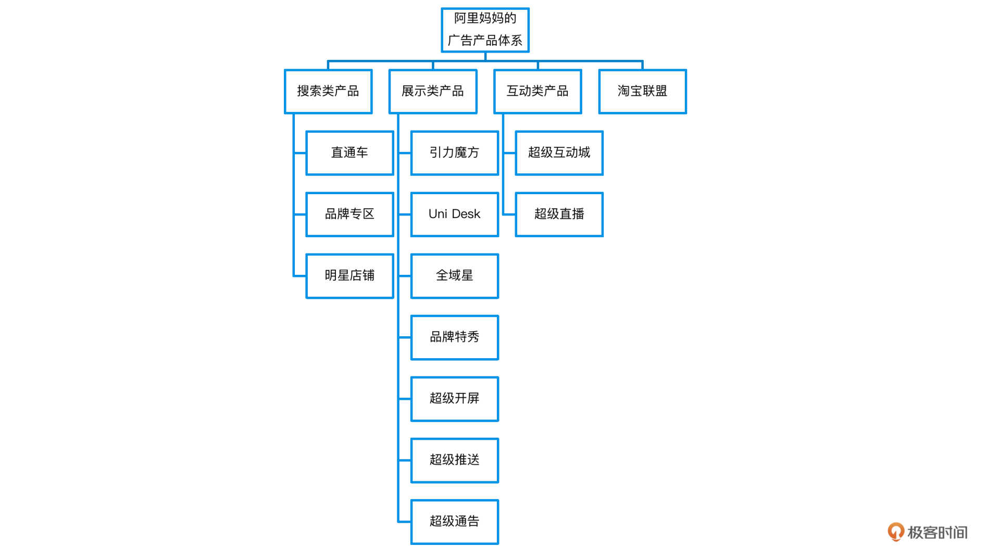
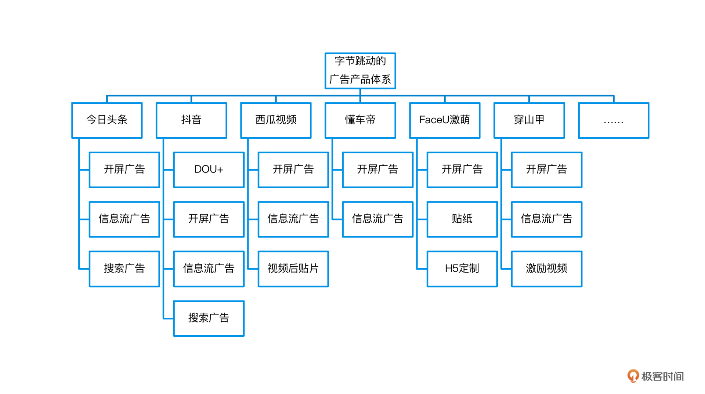
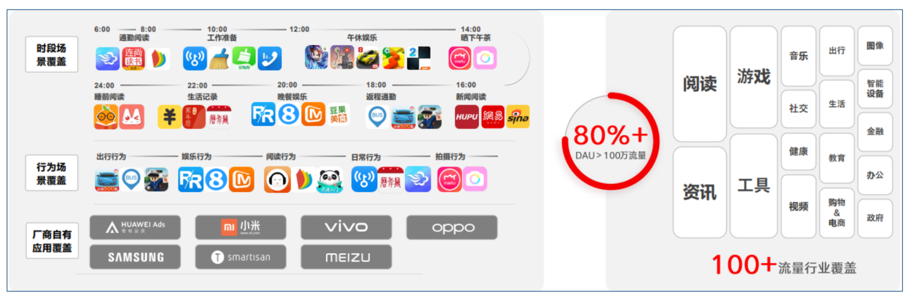
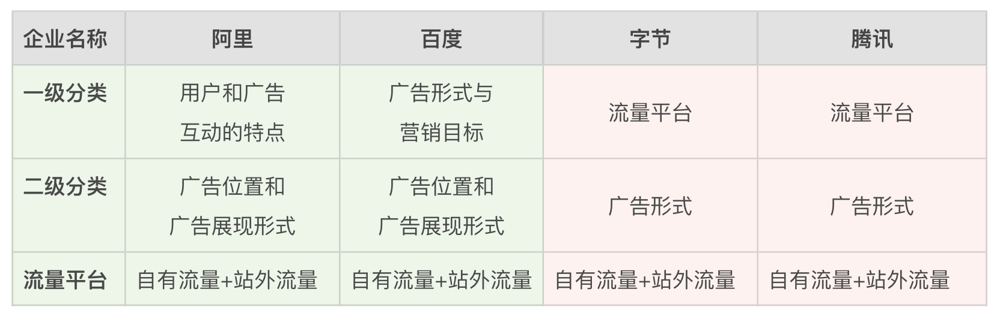
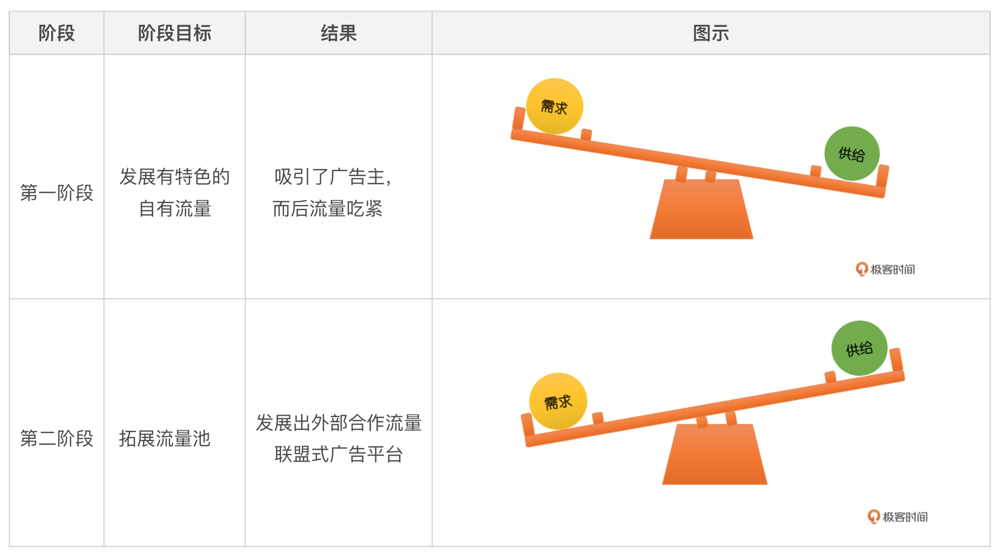

- 00 开篇词 作为一名互联网人，你为什么必须了解广告产品？.md.html
- 01 业务逻辑：广告产品的前世今生和商业模式是怎样的？.md.html
- 02 业务链条：广告主、媒体、第三方等分别如何看待广告产品？.md.html
- 03 头部玩家：从BAT到跳动的字节，广告产品有哪些变化与发展趋势？.md.html
- 04 产品体系：互联网大厂的广告产品存在哪些共性和区别？.md.html
- 05 变现模式：什么样的产品适合采用广告模式变现？.md.html
- 06 产品路线：大厂和小厂的广告产品发展路线有什么区别？.md.html
- 07 计价与效果（上）：如何制定合理的计价方式？.md.html
- 08 计价与效果（下）：如何制定合理的效果评估指标？.md.html
- 09 效果优化：如何一步步从提升曝光量深入到提升销量？.md.html
- 10 流量优化：如何兼顾广告收入和用户体验？.md.html
- 11 物料生产：如何满足广告主的创意需求？.md.html
- 12 精准定向：如何建立一个成熟的用户标签体系？.md.html
- 13 转化优化：互联网大厂如何利用算法优化广告效果？.md.html
- 14 程序化交易：程序化交易是否可以提升广告效果？.md.html
- 15 需求调研：广告产品潜在需求的调研流程是怎样的？.md.html
- 16 平台建设：如何从0到1建立一个完整的广告产品平台？.md.html
- 17 职业发展：新人入行，如何判断自己是否适合做广告产品？.md.html
- 18 团队建设：如何搭建一个高效的广告产品团队？.md.html
- 19 跨团队合作：产研团队和销售端、媒体端、市场端如何合作？.md.html
- 20 产品运营：不同发展阶段如何制定业务目标和运营策略？.md.html
- 21 广告产品彩蛋：课程答疑与推荐书目.md.html
- 结束语 你想要成为什么样的互联网广告产品人？.md.html
- 捐赠
04 产品体系：互联网大厂的广告产品存在哪些共性和区别？
你好，我是郭谊。
今天我们来聊一聊，BAT、字节跳动等互联网大厂的广告产品体系。
虽然BAT、字节跳动在用户产品上侧重不同的方面，但他们的广告产品体系，其实都拥有相似的结构。如果我们能从这些眼花缭乱的产品列表中，找出共性，发现规律，我们就能快速定位广告产品的目标客户和产品特性，还可以借鉴这些共性与规律，规划未来的产品发展体系。
当然，除了共性以外，我们也要了解互联网大厂的广告产品体系存在哪些区别。这可以让我们更好地了解各个平台广告产品体系的特点。现在，就让我们赶紧来抽丝剥茧，看看大厂的广告产品体系是什么样子的吧！
互联网大厂广告产品体系
我们先来看阿里巴巴的广告产品体系。阿里巴巴的广告事业部是阿里妈妈，它主管阿里巴巴整个广告产品业务。它的广告产品体系分为两级，一级分类包含搜索类产品、展示类产品、互动类产品、淘宝联盟四大产品线。前三类是阿里巴巴自有流量上的广告产品，一般会出现在手机淘宝App、手机天猫App、优酷、UC浏览器等平台上。而第四类淘宝联盟是外部合作流量上各种广告的集合，主要出现在WiFi万能钥匙等App、一些手机硬件厂商、其他电商导购等平台。

字节跳动的广告产品体系的一二级分类和阿里妈妈的逻辑不太一样。它把开屏广告、信息流广告、搜索广告这种按照广告形式的分类放到最细粒度，往上按照广告产品所依附的流量平台分为今日头条、抖音、西瓜视频、懂车帝、FaceU激萌等几类。这些流量平台都属于字节跳动的自有流量，只有一个“穿山甲”平台上的流量是和字节跳动合作的站外流量。

穿山甲广告平台上的站外流量，来源十分丰富，包括阅读、资讯、工具、娱乐等各类App，还有华为、小米、vivo、OPPO、三星等手机硬件厂商。

接下来，我们继续看腾讯和百度的广告产品官网，它们的广告产品体系和阿里巴巴、字节跳动是类似的。
腾讯的广告产品体系和字节跳动类似，按照流量平台进行一级归类，分为自有流量平台和外部流量平台。自有流量平台包含微信广告、QQ广告、腾讯新闻广告、腾讯视频广告等；而优量广告属于外部合作流量，也就是原来的腾讯移动联盟广告平台的升级版。
百度的广告产品体系则和阿里妈妈有更多相似之处，它们的分类方式都是基于广告自身的特点划分出来的。阿里妈妈按照用户和广告互动的特点进行一级归类，分为搜索类广告、展示类广告、互动类广告；百度则按照广告形式和营销目标等进行一级归类，分为自有流量平台上的搜索广告、信息流广告、品牌广告、开屏广告、聚屏广告等，以及外部合作流量平台上的百青藤广告，百青藤也就是原来的百度网盟广告平台的升级。

产品体系的特点
- 通过梳理阿里巴巴、字节跳动、腾讯和百度四家企业的广告产品体系，我们可以看出：这些头部玩家的广告产品体系，都可以分为自有流量上的广告产品线和站外合作流量上的广告产品线这两大类。
- 这些头部玩家会根据广告形式对广告产品进行分类，像字节跳动、腾讯、百度都使用了这种分类方式。
- 阿里妈妈广告产品形式分类不太一样，它不是按照广告形式，而是按照用户和广告的互动特点，分为搜索类广告、展示类广告和互动类广告。
另外，需要注意的是，我们一般提到的广告产品，往往指的是“标准广告”，也叫做常规广告，即已经成型、定价、可以进行常规化的采购和投放的广告产品。相对应地，还有一种非标准广告产品，简称“非标广告”。广告主如有需求，需要单独沟通、定价和购买。
非标广告也属于广告产品体系中的产品，但因为不进行常规售卖，所以一般不在广告产品官网上进行展示。有一些非标广告推出后，广告主需求旺盛，媒体平台会考虑将其变成标准广告，进行产品化开发。
根据上面我们对阿里巴巴、字节跳动、腾讯和百度的广告产品体系的分析，我们可以总结出两种不同的体系分类：按照流量平台分类、按与用户的互动关系分类。我们先来看第一种，按照流量平台分类的方式。
体系一：自有流量+外部合作流量
通过上面的学习，现在我们都知道，互联网大厂的广告产品体系都分为自有流量和外部合作流量两大类。那这种体系是怎么发展而来的呢？
首先，这些大厂之所以成为互联网广告产品的头部玩家，备受广告主的关注，是因为它们都拥有很高的流量。无论是来自线下时代的传统行业，例如汽车、金融、日化等行业的广告主，还是来自线上“原住民”行业的游戏、电商等广告主，都想要借助头部企业平台的流量获得关注。购买平台上的广告资源，能够让他们实现这一目标。
为了把平台上的流量资源合理利用起来，获得最大的利润，这些头部玩家自然要搭建自有流量子平台上的产品体系并进行出售。例如阿里巴巴的淘宝直通车广告、字节跳动的抖音信息流广告、微信的朋友圈广告等，这些广告产品都是广告主们争相购买的目标。
既然自有流量平台的产品如此“吃香”，那为什么这些头部玩家又都会纷纷发展出外部合作流量的平台广告产品呢？
一方面来说，流量再大的平台也有上限，流量发展到一定程度会保持在一个比较稳定的状态。另外，从广告位、流量、时间的角度来讲，优质的自有流量资源供给，永远是供不应求的。所以，这些头部玩家也希望能够拓展流量池子，从广告主那里争取更多的预算。而拓展流量池子最快的方法就是聚合外部合作流量了。
从另一方面来说，外部流量的拥有者为什么不自己售卖，而是愿意和头部玩家合作呢？
- 首先，不是所有App都拥有经验丰富的广告产品售卖团队，就连豆瓣、知乎这些知名平台，在前些年也会把所有广告都外包给代理公司代售。
- 其次，即使拥有自己的广告产品售卖团队，这些App在广告主那里关注度和预算分配的优先级也远远低于阿里巴巴、字节跳动这些头部企业。
- 最后，别忘了，广告资源还有一个很大的特点，它和飞机、高铁的舱位一样，具有时效性。未能出售的时段只能白白浪费，所以众多App都愿意和头部玩家的联盟广告平台合作，提高自己的广告售出率。- 让我们形象地总结一下，你可以把自有流量和外部合作流量的产品体系想象成一个跷跷板，一端是广告主对广告产品的需求，一端是媒体平台对广告产品的供给。

互联网大厂的广告产品体系就是在供需不断变化、调整的过程中逐渐建立起来的。下面我们以百度为例，了解一下它在PC互联网时代建立广告产品体系的过程：
- 百度根据广告主投放效果类广告的需求，还有自身流量的特点，首先推出了搜索关键词广告这一产品，吸引了大量的广告主；
- 随着成千上万广告主的投放，搜索关键词广告的流量吃紧，百度紧接着又推出了基于外部合作网站流量的百度网盟广告，也就是百青藤广告的前身；
- 在品牌类广告方面，百度也有类似的举措，首先在搜索结果页推出了品牌专区，后来又推出了基于外部合作网站流量的富媒体广告联盟，可见这种发展方式具有很强的普适性。-

通过分析按流量平台划分的广告产品体系，你应该知道：
- 想要在基于外部合作流量的联盟类广告产品中占据优势，一定要有具有自身特点的自有流量加持，这样才能搞定最初的需求端池子，所以目前市场上最大规模的联盟类广告产品也都是这些头部玩家搭建的；
- 外部流量和自有流量的捆绑销售是一个非常普遍且实用的售卖方式；
- 利益面前没有永远的朋友，同样也没有永远的敌人。头部玩家们也常常会把自身的剩余流量接入对方的广告联盟平台，以保证利益最大化。他们之间的合作是密切且频繁的。
体系二：按与用户的互动关系分类
除了自有流量平台上的广告产品和外部合作流量平台上的广告产品，这两种分类之外，我们前面提到，媒体平台还可以按照广告形式或者用户互动特点分类。按照广告形式分类，我们在第1讲中已经介绍过了，这里不再赘述。另外一种，按照与用户的互动关系分类也是未来一段时间的主流。比如阿里妈妈就采用了这种分类方式。
那按照与用户的互动关系可以分为哪几类呢？
- 搜索类广告：用户输入搜索关键词后才会出现的广告，例如百度的搜索关键词广告、阿里巴巴的淘宝直通车广告、抖音的搜索广告等；
- 展示类广告：用户只要浏览就会出现的广告，例如手机端常见的开屏广告、信息流广告，网页端常见的横幅广告、按钮广告、弹窗广告、富媒体广告，视频内容中常见的前、中、后贴片广告等等；
- 互动类广告：用户可以进行深层互动的广告，会以社交或者直播类产品的形式呈现给我们，例如阿里妈妈的超级直播，字节跳动旗下FaceU的定制贴纸等等。-

和按照广告位置、广告展现形式、营销目标等传统方式分类相比，按照与用户的互动关系进行分类的方法，更具概括性。而且可以涵盖未来新出现的广告形式，有更好的拓展性。
在实际工作中，我们除了采用大厂都用到的自有流量加上外部合作流量的分类方法，还可以结合效仿字节跳动、百度、腾讯，按照广告产品形式分类，或者参考阿里巴巴按照用户互动特点分类，都可以制定出一套适用于各大媒体平台的产品体系。
重点回顾
这节课，我们拆解了阿里巴巴、字节跳动等互联网大厂的广告产品体系。从中，我们可以发现这些互联网大厂的产品体系中都包含自有流量平台上的广告产品和外部合作流量平台上的广告产品。这种举措可以保证流量资源的价值最大化。
除此之外，大厂的广告产品体系，还可以按照广告形式或者和用户的互动方式分类。字节跳动、百度和腾讯主要采用的是按广告形式分类的方式，而阿里巴巴根据与用户互动的方式，把产品体系分成了搜索类广告、展示类广告和互动类广告，在几家头部企业中独树一帜。
以上广告产品体系的分类方式可以交叉使用。根据广告主的需求，再结合自身平台和广告产品的特点，就可以变化出丰富多样的广告产品，创造出具备自身平台特色的广告产品体系。
熟悉广告产品的整个体系，能够帮助我们快速定位广告产品，了解一个媒体平台上广告产品的全貌。在面对任何一个媒体平台时，你都能快速拆解出它的广告产品体系。而且我们可以借鉴头部玩家成熟的产品体系，给其他媒体平台做初步的广告产品体系规划。
实战演练
请你选择一个你感兴趣的App或者其他类型的产品或平台，为它描绘一个完整的广告产品体系。欢迎你在留言区留下你的答案和我讨论，我们下节课再见！
© 2019 - 2023 Liangliang Lee. Powered by gin and hexo-theme-book.